LAPIS: A novel dataset for personalized image aesthetic assessment
We present the Leuven Art Personalized Image Set (LAPIS), a novel dataset for personalized image aesthetic assessment (PIAA). It is the first dataset with images of artworks that is suitable for PIAA. LAPIS consists of 11,723 images and was meticulously curated in collaboration with art historians. Each image has an aesthetics score and a set of image attributes known to relate to aesthetic appreciation. Besides rich image attributes, LAPIS offers rich personal attributes of each annotator. We implemented two existing state-of-the-art PIAA models and assessed their performance on LAPIS. We assess the contribution of personal attributes and image attributes through ablation studies and find that performance deteriorates when certain personal and image attributes are removed. An analysis of failure cases reveals that both existing models make similar incorrect predictions, highlighting the need for improvements in artistic image aesthetic assessment. The LAPIS project page can be found at: https://github.com/Anne-SofieMaerten/LAPIS.
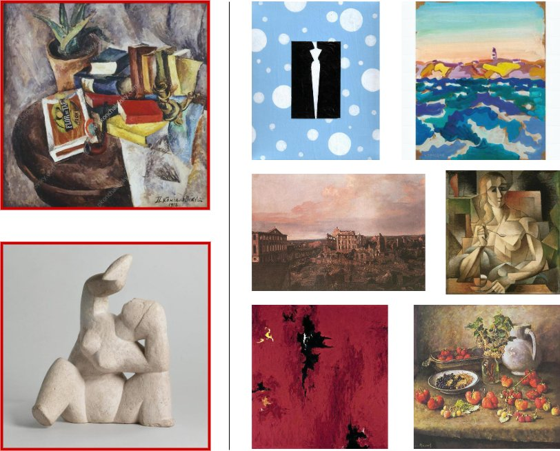
图 1：图像筛选过程示意。左侧图像在质量核查中被剔除：左上图像含有水印，左下图像为雕塑。右侧图像为 LAPIS 中的示例图像。
Computational aesthetics is a subfield of computer science that focuses on the automated aesthetic assessment of images [18]. The current trend is to leverage deep learning to perform image aesthetic assessment (IAA). Although several IAA datasets [39, 8, 12, 23, 37, 10] were created in the last decade, existing datasets often come with limitations. Many of these datasets were created by scraping photography/art contest websites [39, 17, 25]. The aesthetic annotation is then derived from the number of likes or votes an image receives. This may introduce biases in the data, for example: (1) the images in these datasets are all highly aesthetic because unaesthetic images will rarely be submitted to a contest, (2) the votes may be influenced by the amount of engagement (e.g. number of views or downloads). Those who vote may simply not see images that may be equally or more aesthetic. As a result, the aesthetic annotations may not span the entire spectrum of aesthetics and may not represent aesthetic appreciation accurately.
计算美学（computational aesthetics）是计算机科学的一个分支，关注图像的自动化美学评估 [18]。当前趋势是利用深度学习执行图像美学评估（IAA）。尽管过去十年已构建出若干 IAA 数据集 [39, 8, 12, 23, 37, 10]，现有数据集往往带有局限。其中许多数据集是通过抓取摄影／艺术竞赛网站构建的 [39, 17, 25]，美学标注则由图像获得的点赞数或投票数推导而来。这会在数据中引入偏差，例如：（1）由于缺乏美感的图像很少被投送到竞赛，这些数据集中的图像美学质量普遍偏高；（2）投票可能受参与程度（如浏览量或下载量）影响，参与投票者可能根本没有看到那些同样美观甚至更美观的图像。结果是，美学标注既可能无法覆盖完整的美学谱系，也可能无法准确反映美学欣赏。
Another limitation of many existing datasets is that they average out individual differences [17, 39, 8, 12]. Aesthetic assessment is a rather subjective task, rendering it difficult to model and predict. Many existing datasets treat individual variation as noise and compute an average aesthetic score for a given image. Predicting these average scores using machine learning is referred to as generic image aesthetic assessment (GIAA). These datasets can advance research to understand universal properties underlying aesthetic appreciation. However, given the subjective nature of aesthetic appreciation, personalized image aesthetic assessment (PIAA) may offer a more encompassing framework.
许多现有数据集的另一局限在于把个体差异平均掉了 [17, 39, 8, 12]。美学评估是相当主观的任务，因而难以建模与预测。许多现有数据集把个体差异视为噪声，对给定图像计算一个平均美学分数；用机器学习预测这类平均分数被称为通用图像美学评估（GIAA）。这些数据集可以推动对美学欣赏背后共性规律的研究。然而，鉴于美学欣赏的主观属性，个性化图像美学评估（PIAA）或许提供了更具包容性的框架。
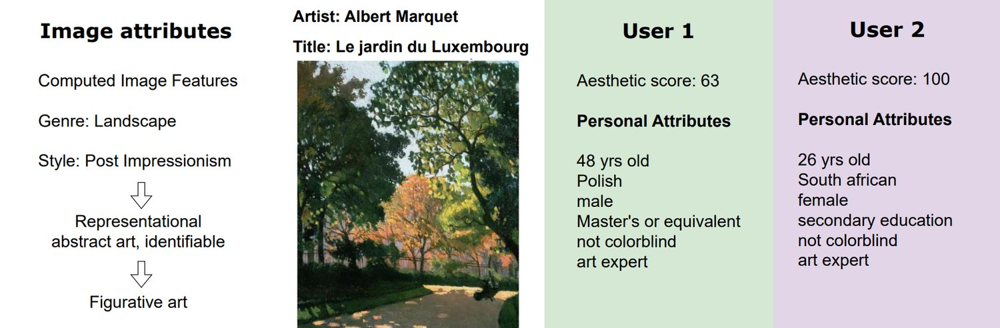
图 2：LAPIS 中数据类型可视化。所有图像都带有元数据（标题、艺术家）与图像属性。图像由多位用户就其美学吸引力评分。对每位用户，我们记录了一组个人属性。
PIAA concerns the prediction of aesthetic scores for each annotator separately [23]. This is a very useful task from a marketing perspective, with applications like personalizing advertisements based on individuals’ online presence (e.g. likes on social media). However, the current PIAA datasets all consist of natural images.
PIAA 关注为每位标注者分别预测美学分数 [23]。从市场营销角度看，这是一项很有用的任务，可用于基于个人线上痕迹（例如社交媒体点赞）定制广告等场景。然而，当前的 PIAA 数据集全部由自然图像构成。
Art has been largely under-explored in computational aesthetics [39]. In fact, none of the existing PIAA datasets include artistic images. Yet, previous research found that individual differences in aesthetic appreciation are larger for artistic images than photographs [31, 32]. Therefore, an artistic dataset is more suited to tackle the problem of PIAA. In addition, artistic image aesthetic assessment (AIAA) presents a relevant challenge for computer vision due to the complexity of artistic images and their need for better pre-processing methods [29]. AIAA has relevant applications given the increase in online art trading [16] and user-friendly technology such as DALL-E [3] which allows almost anyone to generate artistic images. Our contributions are as follows:
在计算美学领域，艺术图像在很大程度上仍未被充分探索 [39]。事实上，现有 PIAA 数据集均未包含艺术图像。然而，已有研究发现，相比照片，艺术图像在美学欣赏上的个体差异更大 [31, 32]。因此，艺术类数据集更适合用来处理 PIAA 问题。此外，艺术图像美学评估（AIAA）由于艺术图像本身的复杂性以及对更优预处理方法的需求 [29]，对计算机视觉构成了切实的挑战。随着线上艺术品交易的增长 [16]，以及 DALL-E [3] 等让人人都能生成艺术图像的易用技术出现，AIAA 具备重要的应用价值。本文贡献如下：
We present the first artistic dataset for PIAA, called the Leuven Art Personalized Image Set (LAPIS). Each image in LAPIS was rated by on average 24 annotators and includes rich personal and image attributes to inform and improve personalized predictions.
我们提出了首个面向 PIAA 的艺术图像数据集，命名为 Leuven Art Personalized Image Set（LAPIS）。LAPIS 中每幅图像平均由 24 位标注者评分，并提供丰富的个人属性与图像属性，用以支持并改进个性化预测。
Our dataset establishes a new standard for data quality in the field. LAPIS was meticulously curated in collaboration with art historians and addresses the limitations mentioned above that are present in many of the existing datasets.
该数据集为该领域的数据质量树立了新标准。LAPIS 与艺术史学者合作精心策划而成，针对了许多现有数据集存在的上述局限。
We analyze the data and perform experiments for both GIAA and PIAA. We find that our data quality improves GIAA and training with rich image and personal attributes improves PIAA.
我们对数据做分析，并针对 GIAA 与 PIAA 分别开展实验。我们发现，数据质量提升了 GIAA 表现，而用丰富的图像属性与个人属性训练则改进了 PIAA。
| Figurative (7976) | Abstract (3747) | ||
|---|---|---|---|
| Representational | Representational | Non-representational | Non-representational |
| figurative art (5131) | abstract art - identifiable (2845) | abstract art - lyrical (3202) | abstract art - geometric (545) |
| Early Renaissance (91) | Impressionism (499) | Abstract Expressionism (1839) | Minimalism (541) |
| High Renaissance (146) | Post-Impressionism (418) | Action Painting (92) | |
| Northern Renaissance (557) | Pointillism (281) | Color Field Painting (1274) | |
| Mannerism (Late Renaissance) (212) | Fauvism (442) | ||
| Baroque (409) | Cubism (427) | ||
| Rococo (435) | Synthetic Cubism (203) | ||
| Romanticism (438) | Analytical Cubism (79) | ||
| Realism (531) | |||
| Art Nouveau (412) | |||
| Symbolism (489) | |||
| Pop Art (357) | |||
| New Realism (152) | |||
| Contemporary Realism (301) | |||
| Naïve Art / Primitivism (602) | |||
表 1：LAPIS 在不同粒度层级上涵盖的风格。最底层包含 WikiArt 原有的 27 种风格。上层风格由艺术史学者定义，用于向非专业受众说明各风格在抽象程度上的层次。每个风格标签后的数字为该风格的图像数量。
There are a few well-curated datasets with art images and aesthetic annotations from the field of empirical aesthetics (VAPS [6], JenAesthetics [2]). Unfortunately, the number of images in these datasets is relatively small (999 and 1628 respectively), rendering them insufficient for machine learning applications. On the other end of the spectrum are the large artistic datasets without aesthetic annotation [35, 1, 24]. More recently, datasets designed for IAA started to include more artistic images [8, 39]. The BoldBrush Artistic Image Dataset (BAID) [39] is the largest collection of artistic images with aesthetic annotations. It consists of over 60K images of artworks. Images are sourced from the website “BoldBrush”11 1 https://faso.com/boldbrush/popular, a platform that allows artists to share their work online. BoldBrush hosts monthly art contests, where users can vote for the artistic images they like. The images in BAID received 360,000 votes in total. These votes were then transferred into a score representing aesthetics, where a higher number of votes translates into a higher aesthetic score. As such, BAID offers a large dataset for GIAA. However, it is not suitable for PIAA, given that scores are obtained by counting votes. Additionally, these votes may not represent aesthetics accurately, highlighting the need for large, well-curated datasets that contain artistic images.
实证美学领域已有少数策划良好的艺术图像与美学标注数据集（VAPS [6]、JenAesthetics [2]）。遗憾的是，这些数据集的图像数量相对较少（分别为 999 与 1628），不足以支撑机器学习应用。另一端则是没有美学标注的大型艺术数据集 [35, 1, 24]。较近期，为 IAA 设计的数据集开始纳入更多艺术图像 [8, 39]。BoldBrush 艺术图像数据集（BAID）[39] 是规模最大的带美学标注的艺术图像集合，包含超过 6 万幅艺术作品图像。图像取自网站“BoldBrush”11 1 https://faso.com/boldbrush/popular，该平台供艺术家在线分享作品。BoldBrush 每月举办艺术竞赛，用户可为喜欢的艺术图像投票。BAID 中的图像共获得 360,000 张投票，这些投票随后被转换为表征美学的分数，票数越高则美学分数越高。因此，BAID 为 GIAA 提供了一个大规模数据集；但由于分数通过计票获得，它并不适用于 PIAA。此外，这些投票未必能准确反映美学，凸显出构建大规模、精心策划的艺术图像数据集的必要性。
Datasets for PIAA include a user ID which allows tracking of responses of a single annotator across different images. The FLICKR-AES [23] dataset was the first dataset introduced for PIAA and consists of 40K images which are scored by at least 5 annotators each. The images in the dataset are photographs sourced from the photography website FLICKR22 2 https://www.flickr.com/. More recently, the Pairwise-Relabeled Aesthetic Attribute Dataset (PR-AADB) [7] was introduced as a test set for PIAA. It is a relabeled version of the AADB dataset [12] which is used for GIAA and contains rich image attributes. 165 annotators judged the images in a pair-wise preference task, resulting in 16k labeled image pairs. The dataset was created to test for robustness in PIAA and can be used for few-shot personalization.
PIAA 数据集包含一个用户 ID，可用于追踪同一标注者在不同图像上的作答。FLICKR-AES [23] 是最早为 PIAA 引入的数据集，包含 4 万幅图像，每幅至少由 5 位标注者评分，图像取自摄影网站 FLICKR22 2 https://www.flickr.com/。较近期提出的 Pairwise-Relabeled Aesthetic Attribute Dataset（PR-AADB）[7] 作为 PIAA 的测试集，是面向 GIAA 的 AADB 数据集 [12] 的重新标注版本，后者含有丰富的图像属性。165 位标注者在成对偏好任务中评判图像，最终得到 1.6 万个已标注图像对。该数据集用于检验 PIAA 的鲁棒性，可用于少样本个性化。
The Explainable Visual Aesthetics dataset (EVA) [10] provides both image attributes and personal attributes. Although EVA is not typically used for PIAA, it does include demographic information about the annotators that allows for PIAA. It consists of 40K photographs with an average of 30 annotators per image. The images were rated on various relevant attributes for aesthetics, alongside aesthetic appreciation itself. Participants were asked to indicate how much they liked the following attributes: light and color, composition and depth, quality and semantics. Annotators were then asked to indicate for each image how much their aesthetic rating was influenced by each of the attributes. In terms of personal attributes, the dataset includes the age, gender, region and photographic level of the annotators.
可解释视觉美学数据集（EVA）[10] 同时提供图像属性与个人属性。虽然 EVA 通常不用于 PIAA，但它确实包含标注者的人口统计信息，因而可用于 PIAA。该数据集包含 4 万幅照片，每幅图像平均由 30 位标注者评分。除美学欣赏本身外，图像还在若干与美学相关的属性上被评分：参与者需指出自己对光照与色彩、构图与景深、质量与语义等属性的喜好程度，随后还需说明每项属性在多大程度上影响了自己对图像的美学评分。在个人属性方面，该数据集包含标注者的年龄、性别、地区与摄影水平。
| image dimensions | complexity/lightness/contrast | color | symmetry/balance | fractality/self-similarity | entropy/feature distribution |
|---|---|---|---|---|---|
| image size | RMS contrast | color entropy | pixel-based: | Fourier spectrum: | anisotropy |
| aspect ratio | lightness entropy | channel means: | mirror symmetry | slope | homogeneity |
| complexity | RGB | DCM | sigma | edge-orientation entropy: | |
| edge density | lab | balance | fractal dimension: | 1st order | |
| HSV | CNN-feature-based: | 2-dimensional | 2nd order | ||
| channel standard deviation: | left-right | 3-dimensional | CNN feature variance: | ||
| RGB | up-down | self-similarity: | sparseness | ||
| lab | left-right AND up-down | PHOG-based | variability | ||
| HSV | CNN-based |
表 2：LAPIS 中可用图像属性一览，均由 Redies 等人 [22] 的工具箱计算得到
The PARA [37] dataset similarly offers both image attributes and personal attributes. It consists of 30,000 photographs annotated by 438 participants with an average of 25 annotators per image. The images were sourced from Flickr and Unsplash33 3 https://unsplash.com/, as well as existing datasets with aesthetic annotations. These existing aesthetic annotations were used to sample images from all aesthetic levels to balance the aesthetic score distribution. They used automated scene classification to balance the images across content. Images were annotated on aesthetic appeal, quality and a set of image attributes (color, composition, depth of field, content, light, object emphasis). They additionally collected emotion attributes and content preferences, as well as demographic information about the annotators. The demographic information includes age, gender, education level, artistic and photographic experience and scores on the Big Five personality test [21]. As such, the PARA dataset is the first to offer rich attributes, both at the image level and the personal level.
PARA [37] 数据集同样同时提供图像属性与个人属性，包含由 438 位参与者标注的 30,000 幅照片，每幅图像平均 25 位标注者。图像取自 Flickr 与 Unsplash33 3 https://unsplash.com/，以及已有的带美学标注的数据集；这些已有的美学标注被用来从各个美学层级采样图像，以平衡美学分数分布。他们用自动化场景分类在内容维度上平衡图像。图像的标注维度包括美学吸引力、质量以及一组图像属性（色彩、构图、景深、内容、光照、主体突出）；此外还收集了情感属性与内容偏好，以及标注者的人口统计信息，后者包括年龄、性别、教育程度、艺术与摄影经验，以及大五人格测验得分 [21]。由此，PARA 是首个在图像层面与个人层面同时提供丰富属性的数据集。
Many research efforts in PIAA have been focused on predicting an aesthetic score per annotator (usually referred to as ’user’ in the context of PIAA) without informing this decision by personal attributes such as demographics [23, 15, 20, 33, 34, 38]. Rather, many works rely on image attributes to improve personalized predictions. One of the earliest works by Ren et al. [23] included image attributes to inform personalized aesthetic predictions. They created the FLICKR-AES dataset which had ratings of 5 different individuals for each image. In their pipeline, they predicted image attributes as well as a generic aesthetic score. These attribute predictions were then used to predict an offset from the generic aesthetic score, to obtain a personalized score for each of those 5 individuals. In a similar vein, more recent work [43, 36] leveraged image attributes to improve predictions in PIAA. Li et al. [13] shifted from this focus on image attributes to personality traits that may influence aesthetic assessment. They trained a siamese network to jointly learn generic aesthetic scores and personality traits. These were then fused to predict a personalized aesthetic score given a personality trait. Zhu et al. [41] similarly leveraged personality prediction to improve PIAA. Their model is informed by both image attributes and personal attributes.
PIAA 领域中，许多研究致力于为每位标注者（在 PIAA 语境下通常称为“用户”）预测美学分数，而不借助人口统计等个人属性来辅助判断 [23, 15, 20, 33, 34, 38]；相反，许多工作依赖图像属性来改进个性化预测。Ren 等人 [23] 是最早把图像属性引入个性化美学预测的工作之一，他们构建了 FLICKR-AES 数据集，其中每幅图像有 5 位不同个体的评分。在其流程中，模型同时预测图像属性与通用美学分数，再用属性预测结果预测相对通用美学分数的偏移量，从而得到这 5 位个体各自的个性化分数。类似地，较近期的工作 [43, 36] 也借助图像属性改进 PIAA 预测。Li 等人 [13] 把关注点从图像属性转向了可能影响美学评估的人格特质：他们训练一个孪生网络联合学习通用美学分数与人格特质，再将二者融合，在给定人格特质的条件下预测个性化美学分数。Zhu 等人 [41] 同样利用人格预测改进 PIAA，其模型同时由图像属性与个人属性提供信息。
Hou et al. [9] and Zhu et al. [42] extended this idea, by modeling interactions between image features and personal attributes. Hou et al. [9] used an interaction matrix in their pipeline to model interactions between image features and individual raters’ preferences for these image features. Zhu et al. [42] consider interactions between demographic traits and learned image attributes. Their model, referred to as PIAA-MIR, is trained on the PARA dataset which is the only dataset rich in both image attributes and personal attributes.
Hou 等人 [9] 与 Zhu 等人 [42] 扩展了这一思路，对图像特征与个人属性之间的交互建模。Hou 等人 [9] 在流程中使用交互矩阵，刻画图像特征与个体评分者对这些特征偏好之间的交互。Zhu 等人 [42] 考察人口统计特征与学习所得图像属性之间的交互，其模型称为 PIAA-MIR，在 PARA 数据集上训练——这是目前唯一同时富含图像属性与个人属性的数据集。
Lastly, Shi et al. [26] extended this idea by considering interactions both within and between these two types of attributes (personal and image attributes). They used graph neural networks to perform collaborative filtering on the PARA dataset. Their model is referred to as PIAA-ICI and achieves state-of-the-art performance, together with the model by Zhu et al. [42]. They are the only two models (to the best of our knowledge) that inform PIAA with rich personal and image attributes. Therefore, we implemented these two models to perform experiments on LAPIS (see section 5).
最后，Shi 等人 [26] 进一步考虑两类属性内部与之间的交互（即个人属性与图像属性）。他们用图神经网络在 PARA 数据集上做协同过滤，其模型称为 PIAA-ICI，与 Zhu 等人 [42] 的模型同属当前最佳性能之列。据我们所知，这两者是仅有的以丰富个人属性与图像属性辅助 PIAA 的模型，因此我们复现了这两个模型并在 LAPIS 上开展实验（见第 5 节）。
Images were sourced from WikiArt44 4 https://www.wikiart.org/, an online archive of artworks that is constructed with the aid of galleries or museums. Similarly as the better-known Wikipedia, gallery or museum curators could contribute to the archive by uploading images of their artworks alongside metadata. LAPIS is a selection of 11,723 images from the WikiArt paintings dataset, which comprises mostly paintings but additionally includes some sketches. LAPIS includes 26 styles (ranging from Renaissance to Minimalism) and 7 genres (abstract, cityscape, flower painting, landscape, nude painting, portrait and still life). We selected images from those 7 genres, since they correspond well to the content that is displayed (as opposed to the remaining genres ‘religious painting’, ‘genre painting’ and ‘sketch and study’). We added hierarchical style labels informed by art historians to provide clarity regarding which styles are closer in terms of abstractness (see Table 1). Given the interdisciplinary nature of computational aesthetics, these labels provide contextual information for those without a background in art history.
图像取自 WikiArt44 4 https://www.wikiart.org/，这是一个在画廊或博物馆协助下构建的艺术作品在线档案库。与更为人熟知的维基百科类似，画廊或博物馆策展人可上传其作品图像及元数据来贡献内容。LAPIS 从 WikiArt 绘画数据集中选取了 11,723 幅图像，该数据集以绘画为主，另含少量素描。LAPIS 涵盖 26 种风格（从文艺复兴到极简主义）与 7 个题材（抽象、城市景观、花卉画、风景、裸体画、肖像与静物）。我们之所以选取这 7 个题材，是因为它们与画面所呈现的内容吻合较好（其余题材“宗教绘画”“风俗画”“素描与习作”则不然）。我们还依据艺术史学者的意见增加了层级化的风格标签，以说明哪些风格在抽象程度上更为接近（见表 1）。鉴于计算美学的跨学科属性，这些标签为没有艺术史背景的研究者提供了语境信息。
The final selection is (largely) balanced55 5 Further details regarding the distribution of LAPIS can be found in the supplementary material. for genre when portrait is combined with nude painting and flower painting is combined with still life. There are a larger number of figurative works (7976) as opposed to abstract works (3747) in LAPIS, as we tried to sample a representative number of works from each style with regards to the total number of works in the full WikiArt dataset. When selecting images, we prioritized those with a higher resolution and a more balanced aspect ratio.
最终的筛选在题材维度上（大体）均衡55 5 关于 LAPIS 分布的更多细节见补充材料。——把肖像与裸体画合并、把花卉画与静物合并之后即可看出。LAPIS 中具象作品（7976 幅）多于抽象作品（3747 幅），因为我们试图按完整 WikiArt 数据集中各风格作品总数，为每种风格采样具有代表性的数量。筛选图像时，我们优先选择分辨率更高、长宽比更均衡的图像。
As a quality check of the data, we manually checked each image in a first small selection of 1990 images. We saw that the dataset included some provocative images, sculptures, duplicates and images containing text (e.g., from a watermark or copyright mark, see Figure 1). We manually removed these instances. Some images included the frame around the artwork, which we cropped manually. We noticed that the genre did not always describe the content of the image correctly. We added a content label and manually described what was most salient in the image (corresponding to one of the 7 genre categories). In addition, we noticed that some of the style labels in WikiArt were inaccurate. We manually adjusted them with the assistance of art historians in this smaller set. Based on this check, we automated the removal of duplicate images, frames of artworks and images containing text in the remainder of our image set (details can be found in the supplementary material). We manually checked the images in the style categories ‘abstract expressionism’ and ‘minimalism’ since these had the highest number of sculptures in our smaller sample. We removed every instance that was not a painting or sketch in these two style categories. We had noticed that most of the inaccuracies in genre were the ‘flower painting’ label being used for other genres. Therefore, we manually checked all the images labeled as ‘flower painting’ in the larger set and corrected the style label if needed.
作为数据质量核查，我们在最初的 1990 幅小规模样本中逐幅人工检查，发现数据集包含一些挑逗性图像、雕塑、重复图像以及含文字的图像（例如来自水印或版权标记的文字，见图 1），并对这些样本做了人工剔除。部分图像带有作品外框，我们也做了人工裁切。我们注意到题材标签并不总能正确描述图像内容，于是增加了内容标签，人工描述图像中最显著的对象（对应 7 个题材类别之一）。此外，我们注意到 WikiArt 中部分风格标签不准确，在这个较小集合上请艺术史学者协助做了人工校正。基于这次核查，我们在剩余图像集上自动化地剔除了重复图像、作品外框与含文字的图像（细节见补充材料）。我们人工检查了“抽象表现主义”与“极简主义”两个风格类别的图像，因为在小样本中这两类含雕塑最多，并剔除了其中不是绘画或素描的每一个样本。我们还发现题材标注的错误多表现为“花卉画”标签被用到了其他题材上，因此在较大集合中人工检查了所有标注为“花卉画”的图像，并在需要时修正其风格标签。
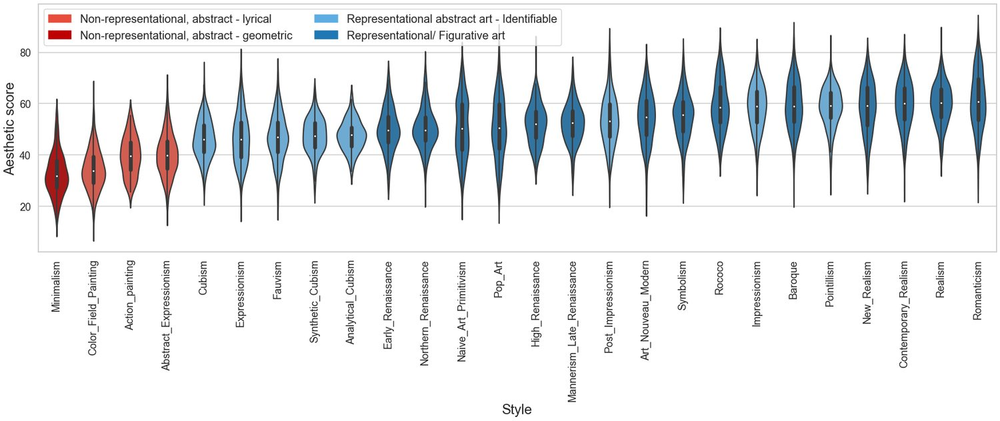
图 3：各风格数据分布的小提琴图。小提琴按美学分数中位数从低到高（自上而下）排列。抽象风格与具象风格分别用不同深浅的红色与蓝色表示。
We set up an online study to obtain aesthetic evaluations for the images in LAPIS. We recruited 552 participants through Prolific66 6 https://www.prolific.com/, a UK based platform allowing workers to anonymously participate in online studies. Prolific is known for having more reliable workers and more safeguards against bots, as well as providing fair payments to its workers. We obtained ethical approval for the study. Only those with achromatopsia (a condition that affects one’s ability to perceive colors) were excluded from participation. At the start of the study, participants provided their informed consent and answered demographic questions (see section 3.3). A set of example images were shown to indicate what kind of images to expect during the study. There was a practice trial before the actual trials in which participants rated the aesthetic value of the displayed images. Images were rated on a visual analogue scale ranging from 0 to 100 with 7 interpretable tick points (Figure s4). After rating a block of images, participants were asked to indicate how many images they recognized. After removal of non-conscientious participants, the average number of annotators per image was 24. Further details regarding the annotation procedure can be found in the supplementary material.
我们搭建了一项在线实验以获取 LAPIS 图像的美学评价，通过 Prolific66 6 https://www.prolific.com/ 招募了 552 位参与者；这是一家英国平台，允许工作者匿名参与在线研究。Prolific 以工作者更可靠、反机器人措施更完善、以及对工作者付酬更公平而著称。本研究已获得伦理审批，仅排除全色盲（一种影响颜色感知能力的病症）者。实验开始时，参与者签署知情同意并回答人口统计问题（见第 3.3 节）。我们展示了一组示例图像，让参与者了解实验中会看到什么类型的图像。正式试次之前有一个练习试次，参与者在其中对呈现图像的美学价值评分。评分采用 0 到 100 的视觉模拟量表，带 7 个可解释的刻度点（图 s4）。每评完一个图像块，参与者需指出自己认出了多少幅图像。剔除不认真的参与者后，每幅图像的平均标注者数为 24。标注流程的更多细节见补充材料。
Figure 2 shows an example image in LAPIS with all its metadata and attributes. LAPIS includes both personal and image attributes. In terms of personal attributes, each annotator was assigned an ID and provided their age, nationality, gender and education level. We asked whether they are colorblind and measured their art interest using the art interest subscale of the VAIAK [28, 27]. Art familiarity was assessed by asking participants how many images they recognized after each block of approximately 250 images. Annotators were divided into art experts and art novices based on their art interest and art familiarity (see section 4.3)
图 2 给出了 LAPIS 中一幅示例图像及其全部元数据与属性。LAPIS 同时包含个人属性与图像属性。个人属性方面，每位标注者被分配一个 ID，并提供年龄、国籍、性别与教育程度；我们询问其是否为色盲，并用 VAIAK 的艺术兴趣分量表 [28, 27] 测量其艺术兴趣。艺术熟悉度通过询问参与者在每个约 250 幅图像的区块后认出多少幅图像来评估。依据艺术兴趣与艺术熟悉度，标注者被划分为艺术专家与艺术新手（见第 4.3 节）。
The image attributes include metadata (style and genre) and computed image attributes. We used the toolbox by Redies et al. [22] to compute these attributes. It computes 31 image attributes that are known to matter for aesthetic appreciation. Table 2 gives an overview of the image attributes, ordered as in Redies et al. [22]. The attributes relate to the image dimensions, complexity, balance, color, luminance, contrast, lightness, symmetry, fractality, self-similarity, entropy and feature distribution. Some of the attributes are related to multiple computed image features. For example, the color channel means for the RGB color spectrum computes 3 values, i.e. one mean value for each channel. As such, there are 47 image features per image, relating to 31 image attributes. For more detailed information on specific features and their relevance for aesthetics, we refer the reader to the original work by Redies et al. [22].
图像属性包括元数据（风格与题材）以及计算得到的图像属性。我们使用 Redies 等人 [22] 的工具箱计算这些属性，该工具箱可计算 31 项已知对美学欣赏有影响的图像属性。表 2 按 Redies 等人 [22] 中的顺序列出了这些属性，涉及图像尺寸、复杂度、平衡、色彩、亮度、对比度、明暗、对称性、分形性、自相似性、熵与特征分布等。部分属性关联到多个计算所得的图像特征，例如 RGB 色彩空间的颜色通道均值会计算出 3 个值（每个通道一个均值）。因此每幅图像共 47 个图像特征，对应 31 项图像属性。关于具体特征及其与美学相关性的更详细信息，请读者参阅 Redies 等人 [22] 的原作。
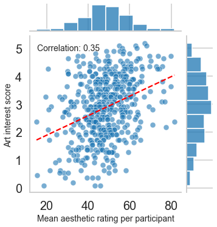
图 4：标注者给出的平均美学评分随其艺术兴趣分数变化的散点图。两侧分别给出艺术兴趣与美学分数的边际分布。我们发现艺术兴趣与美学分数之间存在相关（）。
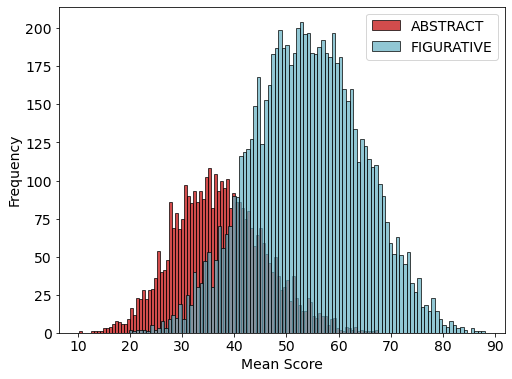
图 5：每幅图像平均后的美学分数直方图。抽象作品与具象作品的数据分别以红色与蓝色显示。我们观察到偏好具象作品的趋势。
We found a moderate correlation between aesthetic score and art interest (). Figure 4 shows the mean aesthetic rating given by a participant in function of their art interest score. Participants who scored higher on art interest rated the images higher on average. None of the other personal attributes revealed strong differences in aesthetic scores.
我们发现美学分数与艺术兴趣之间存在中等程度的相关（）。图 4 给出了参与者的平均美学评分随其艺术兴趣分数的变化。艺术兴趣得分较高的参与者，其平均评分也更高。其余个人属性均未显现出美学分数上的明显差异。
Figure 5 displays the histograms of aesthetic scores for figurative and abstract works where scores are averaged per image (as in GIAA). The data seem normally distributed, with more images receiving a mean rating around the middle of the rating scale. This is a similar trend as in most IAA datasets, and is partially due to people’s tendency to avoid the extremes of rating scales [5] and set effects [19, 30, 14]. We also see a clear trend of preferences towards more figurative works. This is further highlighted in Figure 3, showing the score distribution for each style. The styles are ordered from lowest median score to highest median score. We observe that the four abstract styles received the lowest median scores, whereas the highest scoring styles are among the most figurative styles (e.g. Realism). To assess the robustness of this trend, we looked at agreement between annotators per image. Figure 6 shows the distribution of standard deviations in scores per image in function of the mean score of that image. In general, we can see that images with a mean score that is at the end of the rating scale (either highly aesthetic or unaesthetic) tend to have lower standard deviations, meaning raters agree more on their evaluation of these images (in line with previous work [17]). Strikingly, all the images with a low average score are abstract works, whereas all the images with high average scores are figurative works. There is a small trend towards higher standard deviations for abstract works, meaning annotators disagreed more when judging those works. We saw a similar trend of preferences for certain genres. Abstract works were judged more negatively, while landscapes and cityscapes tend to receive higher ratings (Figure s10). Lastly, we found that luminance entropy and edge orientation entropy correlate positively with aesthetic scores (), while sparseness and CNN symmetry correlate negatively with aesthetic scores () (Figure s11). This suggests that annotators preferred more complex works with higher levels of entropy and less symmetry over more simple works. In terms of color, we found that color channel means tend to correlate negatively with aesthetic scores while color channel standard deviations correlate positively with aesthetic scores. This indicates that annotators rated colorful works higher than those with more uniform colors.
图 5 展示了具象作品与抽象作品的美学分数直方图，分数按图像取平均（与 GIAA 中一致）。数据近似正态分布，多数图像的平均分落在评分量表的中段附近。这与多数 IAA 数据集中的趋势类似，部分原因在于人们倾向于回避评分量表的端点 [5]，以及情境效应 [19, 30, 14]。我们还看到明显的偏好更具象作品的趋势，这在图 3 中更为突出——该图给出每种风格的分数分布，风格按中位数从低到高排列。可以看到，四种抽象风格的中位数分数最低，而得分最高的风格多为最具象的风格（如现实主义）。为检验这一趋势的稳健性，我们考察了每幅图像上标注者之间的一致程度。图 6 给出了每幅图像分数的标准差随该图像平均分的变化分布。总体上，平均分处于量表两端（美学质量极高或极低）的图像标准差往往更小，意味着评分者对这些图像的评价更为一致（与已有工作 [17] 相符）。引人注目的是，所有平均分偏低的图像都是抽象作品，而所有平均分偏高的图像都是具象作品。抽象作品的标准差略有偏高的趋势，说明标注者在评判这些作品时分歧更大。我们在某些题材上也观察到类似的偏好趋势：抽象作品得到的评价更为负面，而风景与城市景观的评分往往更高（图 s10）。最后，我们发现亮度熵与边缘方向熵与美学分数正相关（），而稀疏性与 CNN 对称性则与美学分数负相关（）（图 s11）。这表明标注者更偏好熵值更高、对称性更低的复杂作品，而非更简单的作品。在色彩方面，我们发现颜色通道均值倾向于与美学分数负相关，而颜色通道标准差则与美学分数正相关，说明标注者对色彩丰富的作品评分高于色彩更单一的作品。
We looked at possible interactions between personal and image attributes. Art interest was the only personal attribute that correlated with aesthetic scores. We found that none of the computed image attributes correlated with art interest. When looking at image style and genre, we found that art interest relates to the difference in aesthetic scores for abstract works (Figure s9). We divided the data into a group of novices and experts using a median split based on their scores on art interest as primary variable and the amount of images they recognized as secondary variable. We observe that novices tend to score abstract works consistently lower, whereas this is less apparent for experts.
我们考察了个人属性与图像属性之间可能存在的交互。艺术兴趣是唯一与美学分数相关的个人属性，而计算所得的图像属性均与艺术兴趣无关。在图像风格与题材方面，我们发现艺术兴趣与抽象作品的美学分数差异有关（图 s9）。我们以艺术兴趣得分为主变量、认出的图像数量为次变量，按中位数划分把数据分为新手组与专家组。可以观察到，新手对抽象作品的评分普遍偏低且较为一致，而在专家身上这一倾向不那么明显。
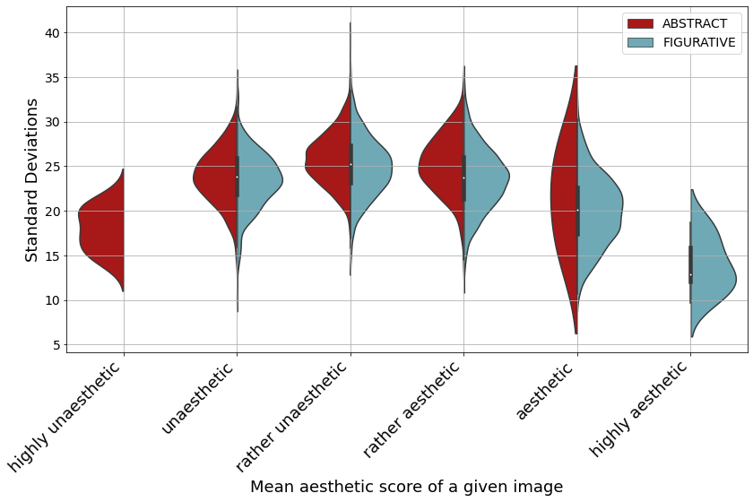
图 6：按评分量表刻度点之间的区间展示的每幅图像标准差分布。抽象作品的结果以红色显示，具象作品以蓝色显示。
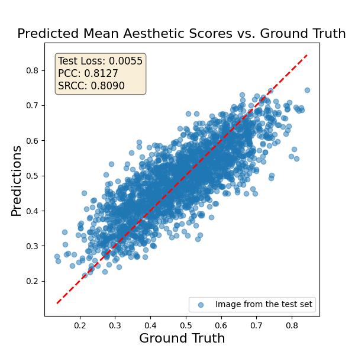
图 7：在 LAPIS 上训练的 ResNet50 在测试集上的预测。
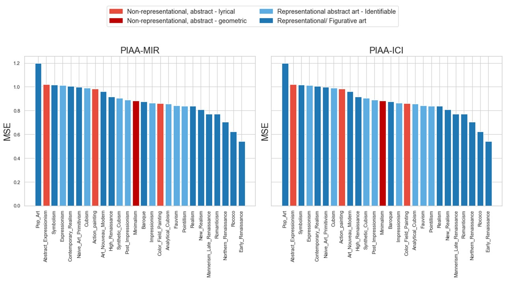
图 8：在 LAPIS 上训练的 PIAA-MIR [42] 与 PIAA-ICI [26] 各风格平均 MSE 柱状图。风格按我们对四种风格从完全具象（蓝色）到完全抽象（红色）的划分着色。
We divided LAPIS into a train, validation and test set using a 70/10/20 split. We used stratified sampling based on aesthetic score and style to ensure that the test set is representative of the training set. Both the test and validation set resemble the distribution of the training set well in terms of aesthetic score, style and genre (more details can be found in the supplementary material).
我们按 70/10/20 的比例将 LAPIS 划分为训练集、验证集与测试集，并基于美学分数与风格做分层采样，以保证测试集对训练集具有代表性。测试集与验证集在美学分数、风格与题材上的分布都很好地贴合训练集（更多细节见补充材料）。
A representative test set is important to accurately assess a model’s performance. Given that the data is normally distributed, a model that predicts scores around the mean would still achieve decent performance. As a result, a test set that is not representative may lead to misleading interpretations of the performance metrics. By using stratified sampling, we ensure that the test set in LAPIS spans the entire range of scores and does not contain an over-representation of styles that may be easier to predict. Figure 7 shows predictions on the test set of ResNet50 trained on LAPIS. We can see that the model predicts scores well across the full range of possible scores.
具有代表性的测试集对准确评估模型性能十分重要。由于数据近似正态分布，一个只预测均值附近分数的模型仍能取得尚可的性能；因此，测试集不具代表性可能导致对性能指标的误读。通过分层采样，我们确保 LAPIS 的测试集覆盖完整的分数区间，且不会过度包含那些较易预测的风格。图 7 给出了在 LAPIS 上训练的 ResNet50 在测试集上的预测，可见模型在整个可能分数区间上都预测得较好。
We implemented both PIAA-MIR [40] and PIAA-ICI [26] and trained them on LAPIS. Our implementation is as close to the original work as possible, however, the personal and image attributes are replaced with the attributes in LAPIS. Rather than evaluating a single user (as in all previous PIAA works), we predict a score for a given combination of demographics. The aim of this evaluation scheme is to assess the models’ ability to inform predictions by a set of personal and image attributes only, without knowledge of other scores given by the same annotator. The goal is to create models that make more general predictions and predict scores for unseen users better. Similarly as in GIAA, we divide the data into train, validation and test sets. We train on the full training set without training per annotator, implying that there is overlap in annotators between the train and test set. When evaluating the models, we assess performance on the full test set. One could argue that this is an unfair evaluation, given that the model is not tested on a set of unseen users (solely unseen images). Therefore, we consider an alternative evaluation scheme where we introduce 4-fold cross-validation to select separate train and test annotators. Specifically, the train set consists of (training images, train users), the validation set of (validation images, train users), and the test set of (test images, test users). Table 3 shows the results. The results using our naive evaluation scheme are close to results obtained on the PARA dataset in the original work by Zhu et al. [40] and Shi et al. [26]. This minor difference in performance may relate to the fact that art images are more challenging for PIAA due to the higher subjectivity of the ratings [31, 32]. When we use the 4-fold cross-validation, performance drops significantly. This suggests that the model overfits on training users with the naive evaluation scheme. It highlights the need for better methods to create models that generalize well to unseen data.
我们复现了 PIAA-MIR [40] 与 PIAA-ICI [26] 并在 LAPIS 上训练。实现尽可能贴近原作，只是把个人属性与图像属性替换为 LAPIS 中的属性。与以往所有 PIAA 工作评估单个用户不同，我们为给定的一组人口统计特征组合预测分数。该评估方案旨在检验模型仅凭一组个人与图像属性、在不知道同一标注者其他评分的情况下提供信息的能力，目标是构建预测更具通用性、对未见用户预测更准确的模型。与 GIAA 类似，我们把数据划分为训练集、验证集与测试集，并在完整训练集上训练而不按标注者分别训练，这意味着训练集与测试集在标注者上存在重叠。评估模型时，我们在完整测试集上衡量性能。有人可能会说这种评估不公平，因为模型并未在一组未见用户上测试（只是未见图像）。因此我们考虑另一种评估方案：引入 4 折交叉验证来选取互不重叠的训练标注者与测试标注者。具体地，训练集由（训练图像，训练用户）构成，验证集由（验证图像，训练用户）构成，测试集由（测试图像，测试用户）构成。表 3 给出了结果。采用这一朴素评估方案所得结果与 Zhu 等人 [40] 和 Shi 等人 [26] 原作在 PARA 数据集上的结果接近；性能上的这点细微差距可能与艺术图像因评分主观性更强而更难做 PIAA 有关 [31, 32]。当我们采用 4 折交叉验证时，性能显著下降。这表明在朴素评估方案下模型对训练用户过拟合，也凸显出需要更好的方法来构建对未见数据泛化良好的模型。
| PARA | single user evaluation scheme | |
| PIAA-MIR | 0.716 0.0008 | |
| PIAA-ICI | 0.739 0.0011 | |
| LAPIS | traditional train/test split | 4-fold cross-validation |
| PIAA-MIR | 0.6958 | 0.2793 .0215 |
| PIAA-ICI | 0.6941 | 0.2773 .0235 |
表 3：当前最佳模型在 LAPIS 与 PARA 上的比较。上方两行为 [42, 26] 中报告的结果，下方为在 LAPIS 上的结果。左列采用传统评估方案，即对图像做训练／验证／测试划分；右列报告 4 折交叉验证方案的结果，该方案下测试数据与训练数据在用户上不重叠。
To further understand how the image attributes and personal attributes contribute to the predictions, we perform ablation studies by removing an attribute as input during training. The results are shown in Table 4. In terms of personal attributes, we performed the ablation study only with art interest and age, given that these were the personal attributes that correlated the most with aesthetic scores in LAPIS. We observe that the omission of art interest deteriorates performance, indicating that this attribute informs the predictions of the model. We do not see such an effect for age. In terms of image attributes, we observe that the omission of style and genre labels deteriorates performance, indicating their importance for aesthetic evaluation. Interestingly, we do not see a decrease in performance when the objective image features that are known to relate to aesthetics are removed as inputs. We hypothesize that this may be due to the backbone already extracting these features (or correlated features) in its convolutional layers.
为理解图像属性与个人属性对预测的具体贡献，我们通过训练时移除某一属性输入来做消融实验，结果见表 4。在个人属性方面，我们只对艺术兴趣与年龄做消融，因为这两者在 LAPIS 中与美学分数的相关最强。可以观察到，去掉艺术兴趣会使性能下降，表明该属性为模型预测提供了信息；年龄上则未见到这种效应。在图像属性方面，去掉风格与题材标签会使性能下降，说明二者对美学评估很重要。有意思的是，去掉那些已知与美学相关的客观图像特征输入时，性能并没有下降。我们推测这可能是因为骨干网络在其卷积层中已经提取出这些特征（或与之相关的特征）。
Lastly, we checked for which image and personal attributes the models struggle to predict aesthetic scores accurately. Figure 8 shows the mean MSE of the images in the test set per style. Although the challenging styles include both figurative and abstract styles, the top-5 best-predicted styles are all representational figurative art. Prediction errors are higher for disliked genres and lower for liked genres (Table s1). In terms of personal attributes, we do not find a correlation between the MSE of predictions and art interest. We do, however, find a negative correlation between prediction errors and age ( for PIAA-ICI and for PIAA-MIR), indicating that the models make more prediction errors for older users. This can be in part explained by the over-representation of younger annotators in LAPIS.
最后，我们检查模型在哪些图像与个人属性上难以准确预测美学分数。图 8 给出了测试集中各风格图像的平均 MSE。尽管难度较高的风格中既有具象风格也有抽象风格，预测最好的前 5 个风格全部是再现性的具象艺术。对不受喜爱的题材，预测误差更高；对受喜爱的题材，预测误差更低（表 s1）。在个人属性方面，我们未发现预测 MSE 与艺术兴趣之间存在相关；但确实发现预测误差与年龄呈负相关（PIAA-ICI 为 ，PIAA-MIR 为 ），说明模型对年长用户的预测误差更大。这部分可由 LAPIS 中年轻标注者占比偏高来解释。
| Ablation | SROCC |
|---|---|
| Baseline | 0.69583 |
| Art interest | 0.55155 |
| Age | 0.68978 |
| Style and genre | 0.55851 |
| Objective image attributes | 0.70118 |
表 4：消融实验结果。左列指明被移除的属性，右列给出相应消融下的 SROCC。可以看到，移除个人属性中的艺术兴趣、以及图像属性中的风格与题材，都会使性能下降。
We present a novel dataset with artistic images for PIAA, which is the first of its kind. We created LAPIS with art images which is more suited for PIAA given the larger individual differences in the assessment of artistic images. LAPIS is well-curated and contains rich personal and image attributes. We show that the high-quality data in LAPIS result in good performance on GIAA using a simple resnet50. PIAA presents a much more challenging task. Our experiments show that the inclusion of rich personal and image attributes improve predictions in PIAA. However, we find that existing models fail on unseen users and images, indicating that PIAA remains a challenging task.
我们提出了一个面向 PIAA 的艺术图像新数据集，这在该方向尚属首次。鉴于艺术图像评价中个体差异更大，我们用艺术图像构建了更适合 PIAA 的 LAPIS。LAPIS 策划精良，包含丰富的个人属性与图像属性。我们表明，借助一个简单的 ResNet50，LAPIS 的高质量数据即可在 GIAA 上取得良好性能。PIAA 则是更具挑战性的任务：实验显示，纳入丰富的个人属性与图像属性能够改进 PIAA 的预测；但我们也发现，现有模型在未见用户与未见图像上会失效，说明 PIAA 仍然是一项充满挑战的任务。
This research was funded by the European Union (ERC AdG, GRAPPA, 101053925, awarded to Johan Wagemans) and the Research Foundation-Flanders (FWO, 11C9522N, awarded to Anne-Sofie Maerten). We would like to thank Ana Belen Carbajal Chavez and Sander Jordens for their assistance in the image selection and quality checks.
本研究由欧盟（ERC AdG, GRAPPA, 101053925，授予 Johan Wagemans）与佛兰德斯研究基金会（FWO, 11C9522N，授予 Anne-Sofie Maerten）资助。我们感谢 Ana Belen Carbajal Chavez 与 Sander Jordens 在图像筛选与质量核查中的协助。
Supplementary Material
补充材料
Figure 9 shows the distributions of aesthetic scores for each data partition (train, validation and test set). We used stratified sampling based on aesthetic score and style (at the superordinate level, i.e. figurative vs abstract) to ensure that the test set is representative of the training set. Figure 10 and Figure 11 show the distribution of styles and genres, respectively, in LAPIS per data partition. We observe that the test set resembles the distribution of the training and validation set well for aesthetic score, style and genre.
图 9 给出了各数据划分（训练集、验证集与测试集）的美学分数分布。我们基于美学分数与风格（在上位层级，即具象对抽象）做分层采样，以保证测试集对训练集具有代表性。图 10 与图 11 分别给出 LAPIS 中各数据划分的风格与题材分布。可以看到，测试集在美学分数、风格与题材上都很好地贴合训练集与验证集的分布。
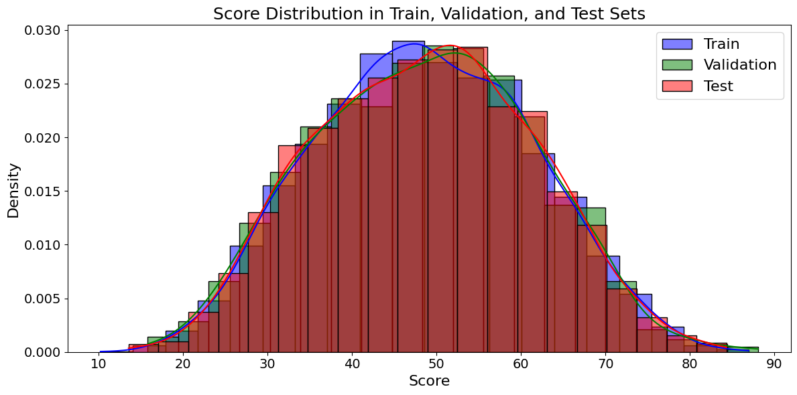
图 9：LAPIS 中的美学分数分布。各数据划分（训练、验证、测试）的分布以不同颜色显示。
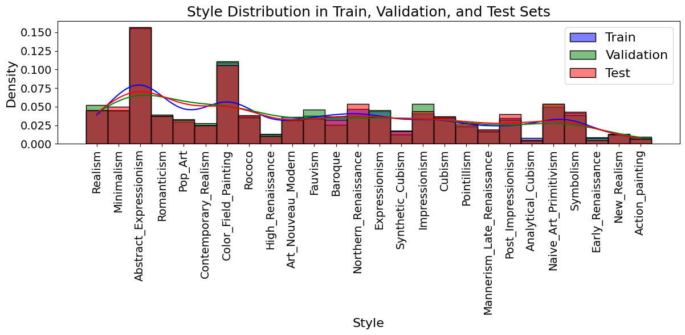
图 10：LAPIS 中的风格分布。各数据划分（训练、验证、测试）的分布以不同颜色显示。
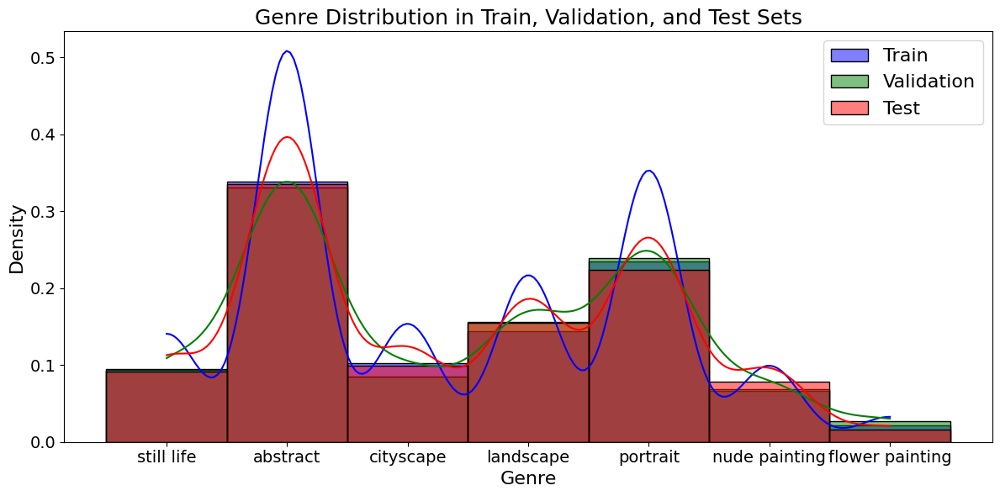
图 11：LAPIS 中的题材分布。各数据划分（训练、验证、测试）的分布以不同颜色显示。
We automated the process of removing frames in the larger image set of LAPIS. We applied code by Robert A. Gonsalves on github77 7 https://github.com/robgon-art/MachineRay that was created to remove frames of paintings in the WikiArt dataset.
在 LAPIS 较大的图像集上，我们把去除画框的过程自动化，使用了 Robert A. Gonsalves 在 github77 7 https://github.com/robgon-art/MachineRay 上的代码，该代码专为去除 WikiArt 数据集中绘画作品的画框而编写。
Detecting duplicate images was done using the difPy package. We removed 21 duplicate images.
重复图像检测使用 difPy 包完成，我们剔除了 21 幅重复图像。
Text detection in the images was done using pytesseract [11]. 1,927 images were flagged by pytesseract and were subsequently removed from our set.
图像中的文字检测使用 pytesseract [11] 完成。pytesseract 标记出 1,927 幅图像，我们从集合中剔除了这些图像。
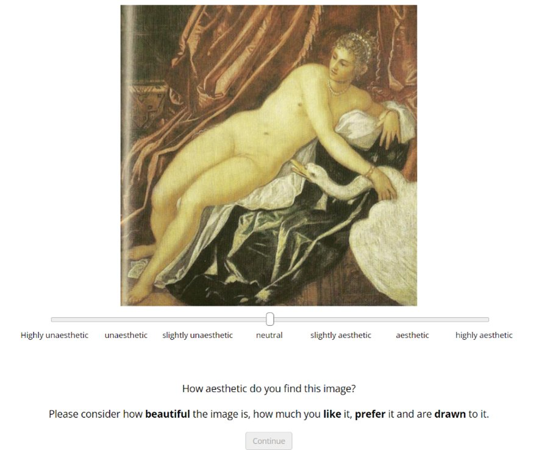
图 12：在线实验中的一个试次示例。
The study was programmed using the JsPsych library [4] in Javascript. At the start of the study, participants provided their informed consent for the study. They were asked if they have a form of colorblindness or have normal eyesight. Only those with achromatopsia (a condition that affects one’s ability to perceive colors) were excluded from participation. They answered a set of demographic questions and completed the art interest part of the VAIAK questionnaire [28, 27] (see section 11.1). A set of example images were shown to indicate what kind of images to expect during the study. There was a practice trial before the actual trials in which participants rated the aesthetic value of the displayed image using a visual analogue scale with 7 tick points (see Figure 12). After rating a block of images, which consisted on average of 250 images and took around 30 minutes, participants were asked to indicate how many images they recognized. In a first wave of data collection, participants could choose to stop the study after one block or continue rating images (up to a maximum of 8 blocks). Because this complicated the payments on Prolific, the second wave of data collection consisted of exactly 2 blocks for every participant which took on average 1 hour to complete.
实验用 JavaScript 的 JsPsych 库 [4] 编写。实验开始时，参与者签署知情同意，并被问及是否有某种色盲或视力正常，仅全色盲（一种影响颜色感知能力的病症）者被排除参与。他们回答一组人口统计问题，并完成 VAIAK 问卷 [28, 27] 中的艺术兴趣部分（见第 11.1 节）。我们展示了一组示例图像，让参与者了解实验中会看到什么类型的图像。正式试次之前有一个练习试次，参与者用带 7 个刻度点的视觉模拟量表对呈现图像的美学价值评分（见图 12）。每评完一个图像块（平均约 250 幅图像、耗时约 30 分钟），参与者需指出自己认出了多少幅图像。第一轮数据收集中，参与者可以选择在一个图像块后停止，也可以继续评分（最多 8 个图像块）。由于这使 Prolific 上的付酬变得复杂，第二轮数据收集改为每位参与者恰好完成 2 个图像块，平均耗时 1 小时。
Since there is no right or wrong answer when it comes to aesthetic appreciation, it was not trivial to determine exclusion criteria to detect non-conscientious trials. One could argue that the size of the dataset is sufficiently large to provide reliable trends in group differences regardless of the noise introduced by such non-conscientious trials. Therefore, we used rather lenient criteria to exclude only those trials that are almost certainly non-conscientious. Participants who gave the same response (i.e. a specific value on the scale that was turned into integers from 0 to 100) more than 100 times were flagged. Those who gave the same rating over 50% of the experiment, suggesting participants were not rating aesthetic value conscientiously, were removed entirely. When participants gave the same response 15 times in a row (or more), those trials were removed. This led us to exclude five participants based on the first criterion, which amounted to the removal of 2160 trials. None of the remaining participants met the second criterion.
由于美学欣赏没有对错之分，确定剔除标准以识别不认真的试次并不容易。也可以说，无论这类不认真试次引入多少噪声，数据集规模已足够大，足以提供可靠的组间差异趋势。因此我们采用相当宽松的标准，只剔除几乎可以肯定不认真的试次。给出相同作答（即量表上被转换为 0 至 100 整数的某个具体数值）超过 100 次的参与者会被标记；在整个实验中给出相同评分占比超过 50%、暗示其并非认真评价美学价值的参与者，则被整体剔除。当参与者连续 15 次（或以上）给出相同作答时，这些试次被剔除。据此，我们依据第一条标准剔除了 5 位参与者，共移除 2160 个试次；其余参与者均未触发第二条标准。
At the beginning of our online study, participants were asked a set of demographic questions. Participants could indicate their age and nationality from a list of all sensible options (e.g. 0-100 for age). The response options for gender were “female”, “male”, “non-binary”, “other/would prefer not to disclose”. The response options for the level of education were “primary education”, “secondary education”, “bachelor’s or equivalent”, “master’s or equivalent” and “doctorate”. Participants were additionally asked to indicate whether they are colorblind with response options “no”, “yes, but I still perceive colors” or “yes, and I do not perceive any colors”. Since those with achromatopsia were discouraged to participate in the study, none of our participants indicated that they are fully colorblind. Out of the annotators in LAPIS, 1.2% is colorblind but still perceives colors. After rating a block of approximately 250 images, participants were asked to indicate how many images they recognized. The response options were “none”, “1-10”, “11-25” or “more than 25”.
在线实验开始时，参与者需回答一组人口统计问题。年龄与国籍可从所有合理选项中选填（例如年龄为 0-100）。性别的备选项为“female”“male”“non-binary”“other/would prefer not to disclose”。教育程度的备选项为“primary education”“secondary education”“bachelor’s or equivalent”“master’s or equivalent”与“doctorate”。参与者还需说明是否色盲，备选项为“no”“yes, but I still perceive colors”或“yes, and I do not perceive any colors”。由于我们劝退全色盲者参与，没有参与者表示自己完全无法感知颜色。在 LAPIS 的标注者中，有 1.2% 为色盲但仍有颜色感知。每评完约 250 幅图像的一个区块，参与者需指出自己认出了多少幅图像，备选项为“none”“1-10”“11-25”或“more than 25”。
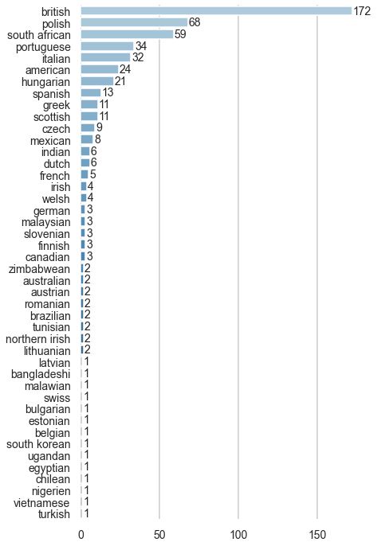
图 13：LAPIS 中标注者国籍直方图。
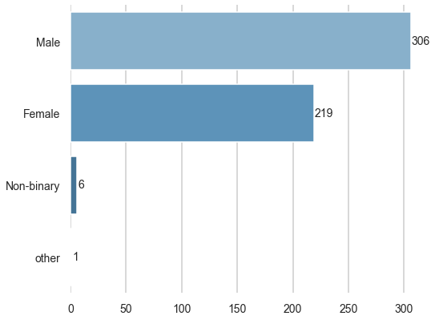
图 14：LAPIS 中标注者性别直方图。
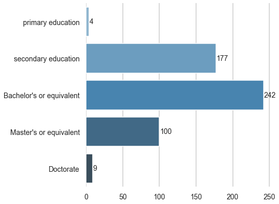
图 15：LAPIS 中标注者教育程度直方图。
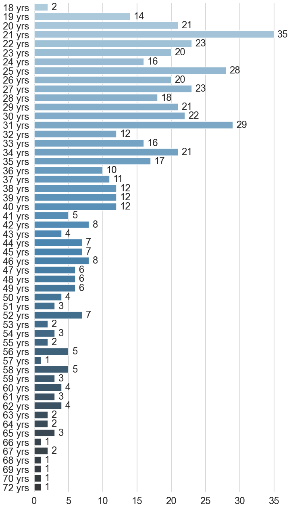
图 16：LAPIS 中标注者年龄直方图。
Figure 14 shows the gender occurrences of the annotators88 8 It should be noted we do not have all the demographic information for all annotators in the dataset. Therefore, the occurrences in these plots do not sum up to the same number of annotators for all plots. in LAPIS. Although the data are relatively balanced between male and female annotators, nonbinary individuals are underrepresented in LAPIS. Figure 16 shows the ages of annotators. Our data includes mostly younger individuals. Figure 13 shows the nationalities of the annotators. The large number of British annotators can be in part explained by the fact that we ran the study on Prolific, which is a UK based platform. Lastly, Figure 15 shows the education level of the annotators, which seems to be representative for the larger population.
图 14 给出了 LAPIS 中标注者的性别构成88 8 需要说明的是，我们并非拥有全部标注者的全部人口统计信息，因此这些图中的计数在各图之间不会加总为同一标注者人数。尽管男性与女性标注者的数据相对均衡，非二元性别个体在 LAPIS 中代表性不足。图 16 给出标注者的年龄，我们的数据以较年轻者为主。图 13 给出标注者的国籍，英国标注者数量之多，部分可由我们在 Prolific 这一英国平台上开展实验来解释。最后，图 15 给出标注者的教育程度，其分布看起来对更大的人群具有代表性。
We find a general trend of lower aesthetic scores for abstract works. Figure 17 shows that abstract works score lower than figurative works, and this trend is stronger for novice annotators. Figure 18 shows a similar trend for the different genres, with abstract works scoring the lowest compared to landscapes and cityscapes.
我们发现抽象作品的美学分数普遍偏低。图 17 显示抽象作品的得分低于具象作品，且这一趋势在新手标注者身上更为明显。图 18 给出了不同题材上的类似趋势，抽象作品得分最低，风景与城市景观则较高。
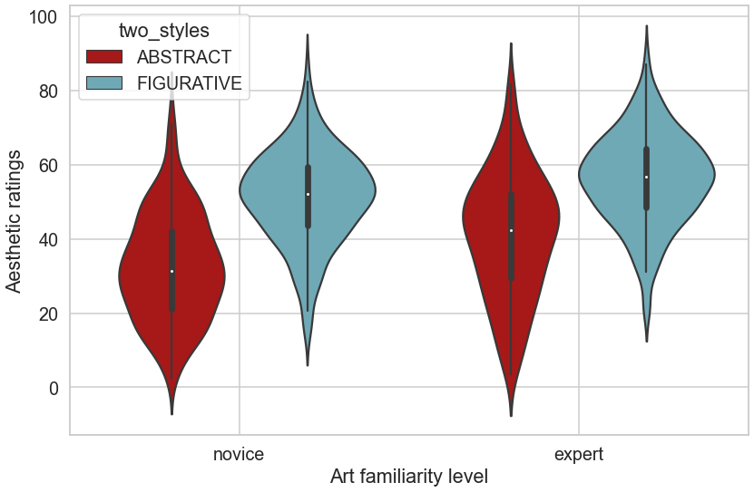
图 17：新手与专家对具象作品和抽象作品所给出平均评分的小提琴图对比。
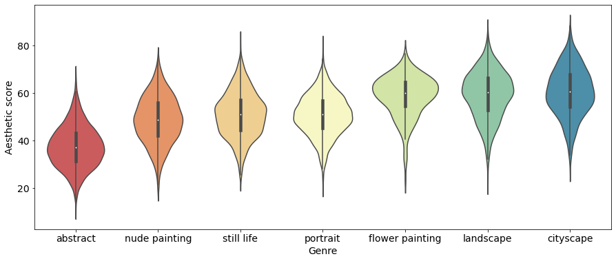
图 18：各题材数据分布的小提琴图。小提琴按美学分数中位数从低到高排列。
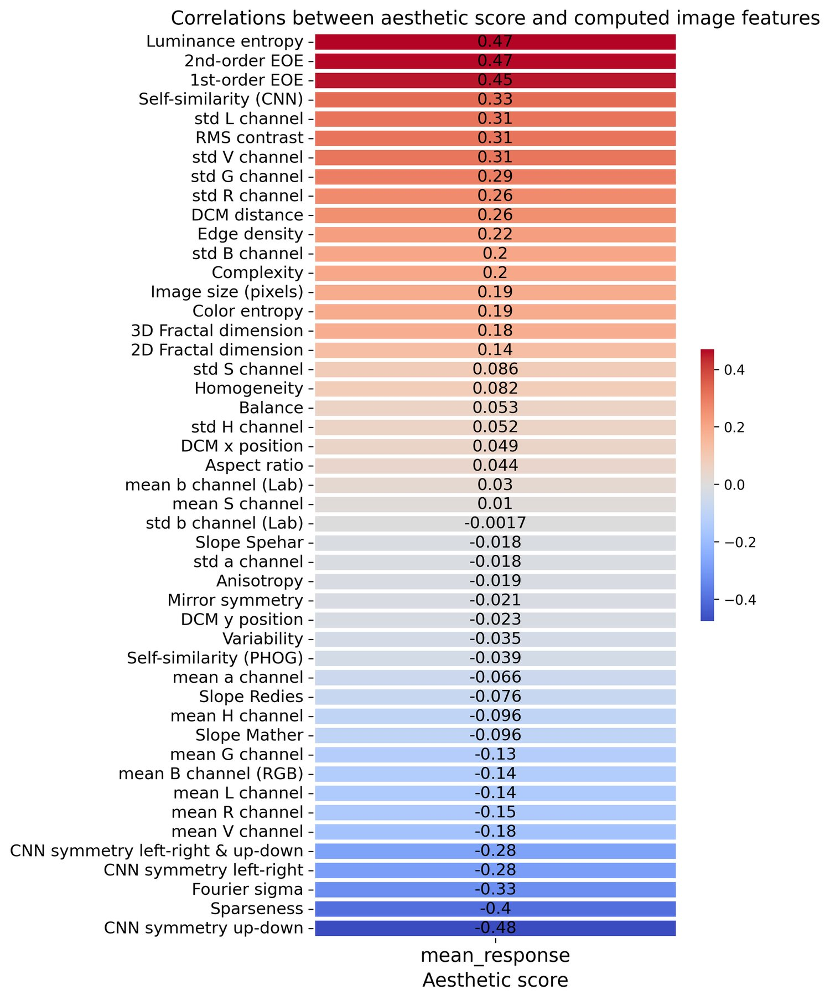
图 19：美学分数与计算所得图像属性之间的 Pearson 相关系数。
Figure 19 shows the correlations between aesthetic scores and computed image attributes. Attributes are ordered from highest to lowest Pearson correlation coefficient. The highest correlating attributes are luminance entropy and edge-orientation entropy, suggesting a preference for works with rich textures or complex compositions. Sparseness and CNN symmetry (up-down) correlate negatively with aesthetic score, suggesting that annotators disliked simple and symmetric works.
图 19 给出美学分数与计算所得图像属性之间的相关性，属性按 Pearson 相关系数从高到低排列。相关性最高的属性是亮度熵与边缘方向熵，表明参与者偏好纹理丰富或构图复杂的作品。稀疏性与 CNN 对称性（上下）与美学分数负相关，表明标注者不喜欢简单、对称的作品。
Table 5 shows the mean MSE per genre on LAPIS’ test set. We observe that the three most disliked genres result in a higher MSE, whereas, the four most liked genres result in lower MSE scores for both PIAA-MIR and PIAA-ICI.
表 5 给出了 LAPIS 测试集上各题材的平均 MSE。可以看到，最不受喜爱的三个题材对应更高的 MSE，而最受欢迎的前四个题材在 PIAA-MIR 与 PIAA-ICI 上都对应更低的 MSE。
| Genre | PIAA-MIR | PIAA-ICI |
|---|---|---|
| Nude painting | 1.01292 | 1.02533 |
| Still life | 0.96589 | 0.99588 |
| Abstract | 0.93523 | 0.94184 |
| Landscape | 0.87165 | 0.86954 |
| Cityscape | 0.84947 | 0.87059 |
| Portrait | 0.81820 | 0.82269 |
| Flower painting | 0.73471 | 0.73106 |
表 5：LAPIS 测试集上 PIAA-MIR 与 PIAA-ICI 各题材的平均 MSE。